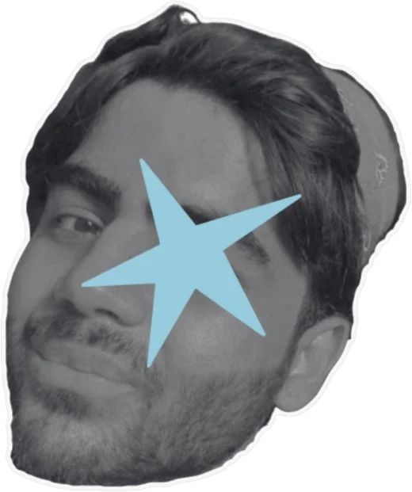
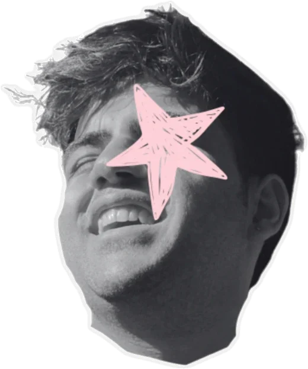
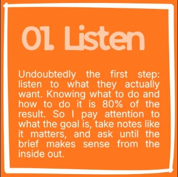
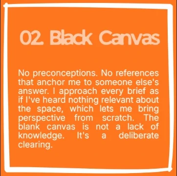
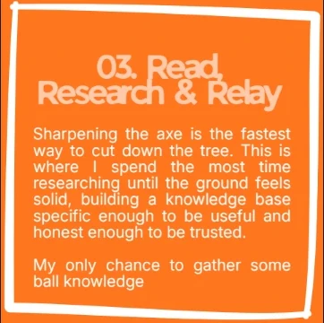
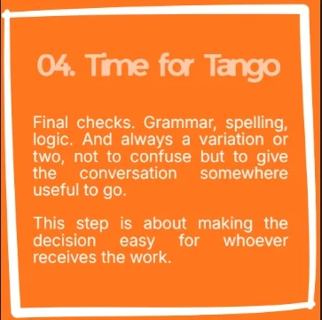
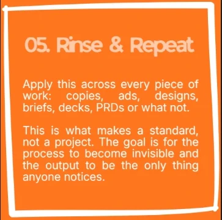
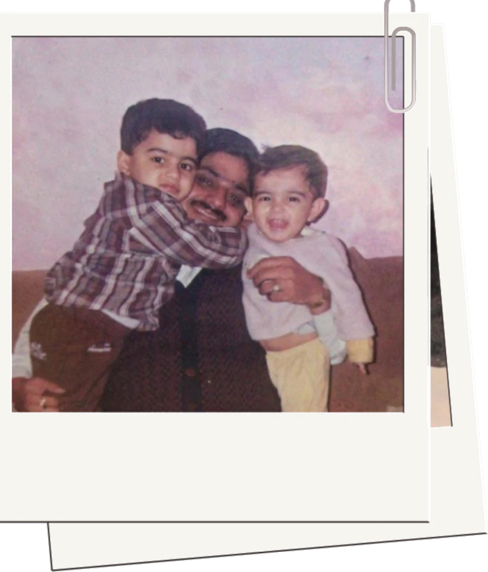
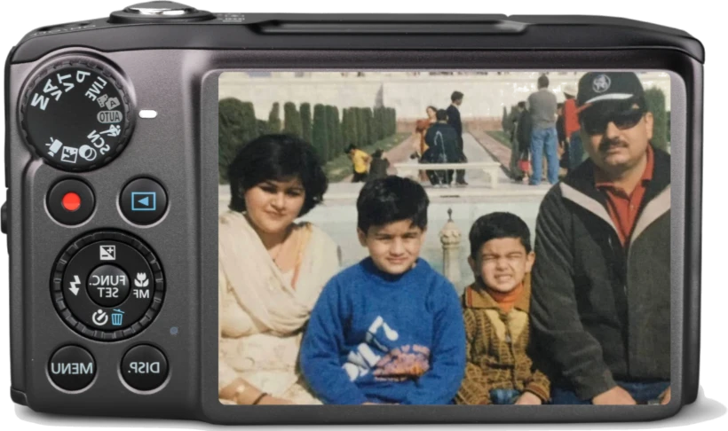
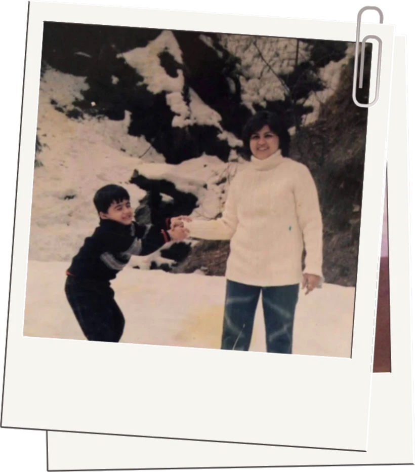

Who I am
I am Shrey Mehra, a specialist in generalisation who has always had one fear: being linear. I am someone who learnt Adobe After Effects in six hours for a high-stakes university presentation, and who ran GA4 analytics as an intern and presented key findings without being asked to. Also the same person who saved their company more than 200K AUD by finding a legal loophole, because an idea arrived while taking a shower. That is who I am, and that is why this exists.
With a Master of Management (Marketing) from UniMelb, I came out with First Class Honours, holding a Faculty of Business & Economics Scholarship and a 50% sponsored ride (phew, fewer education loans). This was on top of working with Compare the Market and iSelect, and serving liquor through BWS. A boy's got to fund his dreams and the city rent.
I like to connect with people. My high-school crush called me an 'empath' once and I took it seriously as a job title. I am a creative marketer who builds, a communicator who listens, and most importantly a human who knows how to blend words with numbers.
My domain has always been brand, communications, creative, public relations, anything that makes a brand perform, not performative. Transparency, authenticity, trust and loyalty drive this new generation of brand building.
Here's what my resume may or may not tell you: I bring cultural fluency from a multicultural upbringing, blended with a knack for pop culture (debate me, anytime), fashion, tech and marketing. I also paint, make lifestyle and travel edits, play badminton with friendly bets on the side, and love hosting events: someone's birthday or a full community get-together. My themes are well in demand, and so is my party punch.
Fluent
The ones I will defend in an interview, under pressure, with a straight face.
Creative & Performance
- Copywriting & brand voice
- Creative strategy
- Campaign planning
- Comms & stakeholder alignment
- Crisis & regulated comms
- Brand building & positioning
- Event & community management
Product & interface
- UI/UX
- Wireframing & prototyping
- Information architecture
- User research
- Design systems
- Accessibility
AI
- Claude API
- Claude Code
- Prompt engineering
- AI workflow design
Marketing stack
- GA4
- Google Ads
Ops
- Notion
- Asana
- JIRA
- Confluence
- Canva
- Photoshop
Working knowledge
Enough to be useful. Honest enough to say so.
- Amplitude
- MoEngage
- Salesforce
- Tableau
- After Effects
- Framer
Five things I believe
- You can never market the same thing to two people.
- A picky eater should not be trusted for taste advice.
- A culture can never be built without understanding the weakest links.

- Being perfect is overhyped. Imagination beats perfection every time.

- I am too young to have dead set opinions.
Current directionEngineer the market,
then market the taste
Product marketing, GTM and brand strategy, for AI, fashion, fintech and any company where a small idea can move a big number.
The brief I want is the one where the category has not decided what it is yet. Industries that do not think in a straight line need someone who does not either: someone who can shape the story, map the journey a customer actually takes, and build the moment they remember afterwards.
Most of the result
happens before
the work starts
Here are the five steps that get me there: the process, not the theory of it.





The screening callThe screening call,
before the screening call
Everything a recruiter asks in the first fifteen minutes, answered properly so neither of us has to spend them.
Who I do it forWho I
do it for


